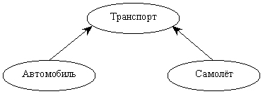
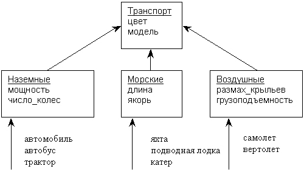

ГЛАВА 6
Объектно-ориентированные возможности РНР
Если вы ориентируетесь в современных технологиях программирования, объектно-ориентированное программирование (ООП) наверняка является частью вашей повседневной работы. Если же вы принадлежите к числу новичков в области ООП, после чтения этой главы и рассмотрения нескольких примеров программирование предстанет перед вами совсем в новом свете. Эта глава посвящена технологии ООП и ее реализации в РНР. В ней описан весь необходимый синтаксис и приводятся примеры, которые позволят вам заняться созданием объектно-ориентированных приложений.
Стратегию ООП лучше всего описать как смещение приоритетов в процессе программирования от функциональности приложения к структурам данных. Это позволяет программисту моделировать в создаваемых приложениях реальные объекты и ситуации. Технология ООП обладает тремя главными преимуществами:
Специфика ООП заметно повышает эффективность труда программистов и позволяет им создавать более мощные, масштабируемые и эффективные приложения. Многие преимущества ООП обусловлены одним из его фундаментальных принципов — инкапсуляцией. Инкапсуляцией называется включение различных мелких элементов в более крупный объект, в результате чего программист работает непосредственно с этим объектом. Это приводит к упрощению программы, поскольку из нее исключаются второстепенные детали.
Инкапсуляцию можно сравнить с работой автомобиля с точки зрения типичного водителя. Многие водители не разбираются в подробностях внутреннего устройства машины, но при этом управляют ею именно так, как было задумано. Пусть они не знают, как устроен двигатель, тормоз или рулевое управление, — существует специальный интерфейс, который автоматизирует и упрощает эти сложные операции. Сказанное также относится к инкапсуляции и ООП — многие подробности «внутреннего устройства» скрываются от пользователя, что позволяет ему сосредоточиться на решении конкретных задач. В ООП эта возможность обеспечивается классами, объектами и различными средствами выражения иерархических связей между ними (классы и объекты рассматриваются ниже).
Хотя РНР обладает общими объектно-ориентированными возможностями, он не является полноценным ОО-языком (например, таким, как C++ или Java). В частности, в РНР не поддерживаются следующие объектно-ориентированные возможности:
Но и без всего перечисленного вы все равно сможете извлечь пользу из объектно-ориентированных возможностей, поддерживаемых РНР. Реализация ООП в РНР оказывает колоссальную помощь в модульном оформлении функциональности вашей программы.
Классы, объекты и объявления методов
Классы образуют синтаксическую базу объектно-ориентированного программирования. Их можно рассматривать как своего рода «контейнеры» для логически связанных данных и функций (обычно называемых методами — см. ниже). Класс представляет собой шаблон, по которому создаются конкретные экземпляры, используемые в программе. Экземпляры классов называются объектами.
Чтобы лучше понять связь между классами и объектами, можно представить класс как «чертеж» для создания объектов. По чертежу «изготавливаются» разные объекты, обладающие одними и теми же базовыми характеристиками (например, при строительстве дома — одна дверь, два окна и определенная толщина стены). Тем не менее, каждый объект существует независимо от других — изменение его характеристик никак не влияет на характеристики других объектов; например, в уже построенном доме можно прорубить дополнительное окно. Важно помнить, что у объектов все равно остается общая характеристика — количество окон.
Класс также можно рассматривать как тип данных (см. главу 2), а объект — как переменную (по аналогии с тем, как переменная $counter относится к целому, а переменная $last_name — к строковому типу). Программа может одновременно работать с несколькими объектами одного класса как с несколькими переменными целого типа. Общий формат классов РНР приведен в листинге 6.1.
Листинг 6.1. Объявление классов в РНР
class Class_name {
var $attribute_1;
...
var $attribute_N;
function function1() {
...
}
...
function functionN() {
...
} // end Class_name
Подведем итоги: объявление класса должно начинаться с ключевого слова class (подобно тому, как объявление функции начинается с ключевого слова function). Каждому объявлению атрибута, содержащегося в классе, должно предшествовать ключевое слово van. Атрибуты могут относиться к любому типу данных, поддерживаемых в РНР; их можно рассматривать как переменные с небольшими различиями, о которых вы узнаете в этой главе. После объявлений атрибутов следуют объявления методов, очень похожие на типичные объявления функций.
 По
общепринятым правилам имена классов ООП
начинаются с прописной буквы, а все слова в
именах методов, кроме первого, начинаются с
прописных букв (первое слово начинается со
строчной буквы). Разумеется, вы можете
использовать любые обозначения, которые
сочтете удобными; главное — выберите
стандарт и придерживайтесь его.
По
общепринятым правилам имена классов ООП
начинаются с прописной буквы, а все слова в
именах методов, кроме первого, начинаются с
прописных букв (первое слово начинается со
строчной буквы). Разумеется, вы можете
использовать любые обозначения, которые
сочтете удобными; главное — выберите
стандарт и придерживайтесь его.
Методы часто используются для работы с атрибутами классов. При ссылках на атрибуты внутри методов используется специальная переменная $this. Синтаксис методов продемонстрирован в следующем примере:
<?
class Webpage {
van $bgcolor;
function setBgColor($color) {
$this->bgcolor = $color;
}
function getBgColor() {
return $this->bgcolor;
}
}
?>
Переменная $this ссылается на экземпляр объекта, для которого вызывается метод. Поскольку в любом классе может существовать несколько экземпляров объектов, уточнение $this необходимо для ссылок на атрибуты, принадлежащие текущему объекту. При использовании этого синтаксиса обратите внимание на два обстоятельства:
атрибут, на который вы ссылаетесь в методе, не нужно передавать в виде параметра функции;
знак доллара ($) ставится перед переменной $this, но не перед именем атрибута (как у обычной переменной).
Создание объектов и работа с ними
Объекты создаются оператором new. Например, объект класса Webpage создается следующей командой:
$home_page = new Webpage;
Новый объект с именем $some_page обладает собственным набором атрибутов и методов, перечисленных в классе Webpage. Для изменения значения атрибута $bgcolor, принадлежащего этому конкретному объекту, можно воспользоваться определенным в классе методом setBgColor( ):
$some_page->setBgColor("black");
Следует помнить, что РНР также позволяет явно получить значение атрибута указанием имен объекта и атрибута:
$some_page->bgcolor;
Однако второй способ противоречит принципу инкапсуляции, и при работе с ООП поступать так не следует. Чтобы понять, почему это так, прочитайте следующий раздел.
Допустим, вы создали класс, один из атрибутов которого представляет собой массив. Но вместо того чтобы работать с массивом через промежуточные методы (например, предназначенные для создания, удаления, модификации элементов и т. д.), вы в случае необходимости напрямую обращаетесь к массиву. В течение месяца вы уверенно программируете большое «объектно-ориентированное» приложение и благосклонно принимаете хвалу коллег-программистов. Будущее сулит много радостей — премии, оплачиваемый отпуск и даже отдельный кабинет.
Но вот через месяц после успешного запуска вашего web-приложения ваш начальник вдруг решает, что массивы в данном случае не годятся и работать с информацией нужно только через базу данных.
Какая неприятность! Поскольку вы решили работать с атрибутами напрямую, вам теперь придется просматривать всю программу и везде, где происходят обращения к данным, вносить исправления в соответствии с новым интерфейсом. Задача весьма хлопотная, к тому же чревата риском внесения новых ошибок.
А теперь давайте посмотрим, что произошло бы при работе с данными с использованием методов. Все, что вам пришлось бы сделать при переходе от массива к базе данных — перепрограммировать методы. Модификация автоматически распространяется на все точки программы, в которых присутствуют вызовы методов.
Довольно часто при создании объекта требуется задать значения некоторых атрибутов. К счастью, разработчики технологии ООП учли это обстоятельство и реализовали его в концепции конструкторов. Конструктор представляет собой метод, который задает значения некоторых атрибутов (а также может вызывать другие методы). Конструкторы вызываются автоматически при создании новых объектов. Чтобы это стало возможным, имя метода-конструктора должно совпадать с именем класса, в котором он содержится. Пример конструктора приведен в листинге 6.2.
Листинг 6.2. Использование конструктора
<?
class Webpage {
var $bgcolor;
function Webpage($color) {
$this->bgcolor = $color;
}
}
// Вызвать конструктор класса Webpage
$page = new Webpage("brown");
?>
Раньше создание объекта и инициализация атрибутов выполнялись раздельно. Конструкторы позволяют выполнить эти действия за один этап.
Интересная подробность: в зависимости от количества передаваемых параметров могут вызываться разные конструкторы. Например, в листинге 6.2 объекты класса Webpage могут создаваться двумя способами. Во-первых, вы можете вызвать конструктор, который просто создает объект, но не инициализирует его атрибуты:
$page = new Webpage;
Во-вторых, объект можно создать при помощи конструктора, определенного в классе, — в этом случае вы создаете объект класса Webpage и присваиваете значение его атрибуту bgcolor:
$page = new Webpage("brown");
Как упоминалось ранее, в РНР отсутствует непосредственная поддержка деструкторов. Тем не менее, вы можете легко имитировать работу деструктора, вызывая функцию РНР unset( ). Эта функция уничтожает содержимое переменной и возвращает занимаемые ею ресурсы системе. С объектами unset( ) работает так же, как и с переменными. Допустим, вы работаете с объектом $Webpage. После завершения работы с этим конкретным объектом вызывается функция
unset($Webpage);
Эта команда удаляет из памяти все содержимое $Webpage. Действуя в духе инкапсуляции, можно поместить вызов unset( ) в метод с именем destroy( ) и затем вызвать его:
$Website->destroy( );
Помните: необходимость в вызове деструкторов возникает лишь при работе с объектами, использующими большой объем ресурсов, поскольку все переменные и объекты автоматически уничтожаются по завершении сценария.
Простое и иерархическое наследование
Как говорилось выше, класс является шаблоном, по которому создаются реальные объекты с определенными характеристиками и функциями. Нетрудно представить себе ситуацию, при которой такой объект является частью другого объекта. Например, автомобиль можно считать частным случаем категории «транспортное средство», к которой относятся и самолеты. Хотя разные типы транспортных средств сильно отличаются друг от друга, все они характеризуются атрибутами из общего набора (количество колес, мощность, максимальная скорость, модель и т. д.). Пусть конкретные значения этих атрибутов сильно различаются — атрибуты все равно присущи всем транспортным средствам. Таким образом, субклассы «автомобиль» и «самолет» наследуют общий набор базовых характеристик от суперкласса «транспортное средство». Концепция получения классом характеристик от другого, более общего класса называется наследованием.
Наследование является исключительно полезным средством программирования, поскольку его применение предотвращает копирование кода, совместно используемого структурами данных, — например, общих характеристик различных типов транспортных средств, упоминавшихся в предыдущем абзаце. В общем случае синтаксис наследования характеристик другого класса в РНР выглядит так:
class Class_name2 extends Class_name1 {
объявления атрибутов;
объявления методов;
}
Ключевое слово extends говорит о том, что класс Class_name2 наследует все характеристики класса Class_name1.
Помимо возможности многократного использования кода, наследование обладает еще одним важным преимуществом — снижается вероятность ошибок при
модификации программы. Например, в иерархии, изображенной на рис. 6.1, изменения в классе «автомобиль» никак не отразятся на коде (и данных) класса «самолет», и наоборот.
 Вызов
конструктора производного класса не
приводит к автоматическому вызову конструктора
базового класса.
Вызов
конструктора производного класса не
приводит к автоматическому вызову конструктора
базового класса.

Рис. 6.1. Иерархия транспортных средств
В листинге 6.3 приведены классы, моделирующие иерархию, изображенную на рис. 6.1.
Листинг 6.3. Представление различных типов транспортных средств при помощи наследования
<?
// Транспортное средство
class Vehicle {
var $model;
var $current_speed;
function setSpeed($mph) {
$this->current_speed = $mph;
}
function getSpeed() {
return $this->current_speed;
}
}
// Автомобиль
class Auto extends Vehicle {
var $fue1_type;
function setFuelType($fuel) {
$this->fuel_type = $fuel;
}
function getFuelType() {
return $this->fuel_type;
}
}
// Самолет
class Airplane extends Vehicle {
var $wingspan;
function setWingSpan($wingspan) {
$this->wingspan = $wingspan;
}
function getWingSpan() {
return $this->wingspan;
}
}
?>
Объекты этих классов создаются следующим образом:
$tractor = new Vehicle;
$gulfstream = new Airplane;
Приведенные команды создают два объекта. Первый объект, $tractor, относится к классу Vehicle. Второй объект, $gulfstream, относится к классу Airplane и потому обладает как общими характеристиками класса Vehicle, так и уточненными характеристиками класса Airplаne.
 Ситуация,
при которой класс наследует свойства
нескольких родительских классов,
называется множественным наследованием. К
сожалению, в РНР множественное
наследование не поддерживается. Например,
следующая конструкция невозможна в РНР:
Ситуация,
при которой класс наследует свойства
нескольких родительских классов,
называется множественным наследованием. К
сожалению, в РНР множественное
наследование не поддерживается. Например,
следующая конструкция невозможна в РНР:
class Airplane extends Vehicle extends Building...
Многоуровневое наследование
С увеличением размеров и сложности программ может возникнуть необходимость в многоуровневом наследовании. Иначе говоря, класс будет наследовать свои свойства от других классов, которые, в свою очередь, будут наследовать от третьих классов и т. д. Многоуровневое наследование развивает модульную структуру программы, обеспечивая простоту сопровождения и более четкую логическую структуру. Скажем, при использовании примера с транспортными средствами в большой программе может появиться необходимость в дополнительном разбиении на субклассы суперкласса Vehicle, продолжающем логическое развитие иерархии. Например, транспортные средства можно дополнительно разделить на наземные, морские и воздушные, чтобы суперкласс специализированных субклассов выбирался в зависимости от среды, в которой перемещается данное транспортное средство. Новый вариант иерархии показан на рис. 6.2.
Краткий пример, приведенный в листинге 6.4, подчеркивает некоторые важные аспекты многоуровневого наследования в РНР.
Листинг 6.4. Многоуровневое наследование
<?
class Vehicle {
Объявления атрибутов...
Объявления методов...
}
class Land extends Vehicle {
Объявления атрибутов...
Объявления методов...
}
class Саr extends Land {
Объявления атрибутов...
Объявления методов...
}
$nissan = new Car;
?>
Объект $nissan содержит все атрибуты и методы классов Саr, Land и Vehicle. Как видите, программа получается исключительно модульной. Допустим, когда-то в будущем вы захотите добавить в класс Land новый атрибут. Нет проблем: внесите соответствующие изменения в класс Land, и этот атрибут немедленно становится доступным для классов Land и Саr, не влияя на функциональность других классов. Таким образом, модульность кода и гибкость относятся к числу основных преимуществ ООП.

Рис. 6.2. Многоуровневое наследование в иерархии Vehicle
 Хотя
масс наследует свои характеристики от
цепочки родителей, конструкторы родительских
классов не вызываются автоматически при
создании объектов класса-наследника. Эти
конструкторы могут вызываться классом-наследником
в виде методов.
Хотя
масс наследует свои характеристики от
цепочки родителей, конструкторы родительских
классов не вызываются автоматически при
создании объектов класса-наследника. Эти
конструкторы могут вызываться классом-наследником
в виде методов.
В некоторых ситуациях бывает удобно создать класс, объекты которого никогда не создаются (данный класс нужен всего лишь как базовый для создания производных классов). Такие классы называются абстрактными. Абстрактные классы обычно применяются в тех случаях, когда разработчик программы хочет обеспечить обязательную поддержку некоторых функциональных возможностей всеми классами, производными от абстрактного базового класса.
В РНР отсутствует прямая поддержка абстрактных классов, однако существует простое обходное решение — достаточно определить в «абстрактном» классе конструктор и включить в него вызов die( ). Вернемся к классам из листинга 6.4. Скорее всего, вам никогда не придется создавать экземпляры классов Land и Vehicle, поскольку они не могут представлять физические объекты. Для представления реальных объектов (например, автомобилей) следует создать класс, производный от этих классов. Следовательно, чтобы предотвратить возможное создание объектов классов Land и Vehicle, необходимо включить в их конструкторы вызовы die( ), как показано в листинге 6.5.
Листинг 6.5. Создание абстрактных классов
<?
class Vehicle {
Объявления атрибутов...
function Vehicle() }
die ("Cannot create Abstract Vehicle class!");
}
Объявления других методов...
}
class Land extends Vehicle {
Объявления атрибутов...
function Land() }
die ("Cannot create Abstract Land class!");
}
Объявления других методов. } class Car extends Land {
Объявления атрибутов...
Объявления методов...
}
?>
Попытка создания экземпляра этих абстрактных классов приведет к выдаче сообщения об ошибке и завершению программы.
Перегрузкой методов называется определение нескольких методов с одинаковыми именами, но разным количеством или типом параметров. Как и в случае с абстрактными классами, в РНР эта возможность не поддерживается, но существует простое обходное решение, приведенное в листинге 6.6.
Листинг 6.6. Перегрузка методов
<?
class Page {
var $bgcolor;
var $textcolor;
function Page() {
// Определить количество переданных аргументов
// и вызвать метод с нужным именем
$name = "Page".func_num_args();
// Call $name with correct number of arguments passed in
if ( func_num_args() == 0 ) :
$this->$name();
else :
$this->$name(func_get_arg(0));
endif;
}
function Page0() {
$this->bgcolor = "white";
$this->textcolor = "black";
print "Created default page";
}
function Page1($bgcolor) {
$this->bgcolor = $bgcolor;
$this->textcolor = "black";
print "Created custom page";
}
}
$html_page - new Page("red");
?>
В этом примере при создании нового объекта с именем $html_page передается один аргумент. Поскольку в классе был определен конструктор по умолчанию (Раgе( )), вызывается именно он. Однако конструктор по умолчанию всего лишь выбирает, какому из конструкторов (Page0( ) или Page1( )) следует передать управление. При выборе конструктора используются функции func_num_args( ) и func_get_arg( ), которые, соответственно, определяют количество аргументов и читают эти аргументы.
Конечно, такое решение вряд ли можно назвать полноценной перегрузкой, но оно подойдет для тех, кто не может жить без этого важного аспекта ООП.
Функции для работы с классами и объектами
В РНР существует несколько стандартных функций для работы с классами и объектами; эти функции рассматриваются в следующих разделах. Все они часто используются на практике, особенно в процессе разработки интерфейса, администрирования кода и диагностики ошибок.
get_class_methods( )
Функция get_class_methods( ) возвращает массив имен методов класса с заданным именем. Синтаксис функции get_class_methods( ):
array get_class_methods (string имя_класса)
Простой пример использования get_class_methods( ) приведен в листинге 6.7.
Листинг 6.7. Получение списка методов класса
<?
...
class Airplane extends Vehicle {
var $wingspan;
function setWingSpan($wingspan) {
$this->wingspan = $wingspan;
}
function getWingSpan() {
return $this->wingspan;
}
}
$cls_methods = get_class_methods(Airplane);
// Массив $cls_methods содержит имена всех методов,
// объявленных в классах "Airplane" и "Vehicle"
?>
Как видно из листинга 6.7, функция get_class_methods( ) позволяет легко получить информацию обо всех методах, поддерживаемых классом.
get_class_vars( )
Функция get_class_vars( ) возвращает массив имен атрибутов класса с заданным именем. Синтаксис функции get_class_vars( ):
array get_class_vars (string имя_класса)
Пример использования get_class_vars( ) приведен в листинге 6.8.
Листинг 6.8. Получение списка атрибутов класса функцией get_class_vars( )
<?
class Vehicle {
var $model;
var $current_speed; }
class Airplane extends Vehicle {
var Swingspan; } $a_class = "Airplane";
$attribs = get_class_vars($a_class);
// $attribs = array ( "wingspan", "model", "current_speed")
?>
Массив $attribs заполняется именами всех атрибутов класса Airplane.
get_object_vars( )
Функция get_object_vars( ) возвращает ассоциативный массив с информацией обо всех атрибутах объекта с заданным именем. Синтаксис функции get_object_vars( ):
array get_object_vars (object имя_обьекта)
Пример использования функции get_object_vars( ) приведен в листинге 6.9.
Листинг 6.9. Получение информации о переменных объекта
<?
class Vehicle {
var Swheels;
}
class Land extends Vehicle {
var Sengine;
}
class car extends Land {
var $doors:
function car($doors, $eng, $wheels) {
$this->doors = $doors;
$this->engine = $eng;
$this->wheels = $wheels;
}
function get_wheels() {
return $this->wheels;
}
}
$toyota = new car(2,400,4);
$vars = get_object_vars($toyota);
while (list($key, $value) = each($vars)) :
print "$key ==> $value <br>";
endwhile;
// Выходные данные:
// doors ==> 2
// engine ==> 400
// wheels ==> 2
?>
Функция get_object_vars( ) позволяет быстро получить всю информацию об атрибутах конкретного объекта и их значениях в виде ассоциативного массива.
method_exists( )
Функция method_exists( ) проверяет, поддерживается ли объектом метод с заданным именем. Если метод поддерживается, функция возвращает TRUE, в противном случае возвращается FALSE. Синтаксис функции method_exists( ):
bool method_exi sts (object имя_обьекта. string имя_метода)
Пример использования метода method_exists( ) приведён в листинге 6.10.
Листинг 6.10. Проверка поддержки метода объектом при помощи функции method_exists()
<?
class Vehicle {
...
}
class Land extends Vehicle {
var $fourWheel;
function setFourWheel Drive() {
$this->fourWeel = 1;
}
}
// Создать объект с именем $саr
$car = new Land;
// Если метод "fourWheelDrive" поддерживается классом "Land"
// или "Vehicle", вызов method_exists возвращает TRUE;
// в противном случае возвращается FALSE.
// В данном примере method_exists() возвращает TRUE.
if (method_exists($car, "setfourWheelDrive")) :
print "This car is equipped with 4-wheel drive";
else :
print "This car is not equipped with 4-wheel drive";
endif;
?>
В листинге 6.10 функция method_exists ( ) проверяет, поддерживается ли объектом $car метод с именем setFourWheelDrive( ). Если метод поддерживается, функция возвращает логическую истину и фрагмент выводит соответствующее сообщение. В противном случае возвращается FALSE и выводится другое сообщение.
get_class( )
Функция get_class( ) возвращает имя класса, к которому относится объект с заданным именем. Синтаксис функции get_class( ):
string get_class(object имя_объекта);
Пример использования get_class( ) приведен в листинге 6.11.
Листинг 6.11. Получение имени класса функцией get_class( )
<?
class Vehicle {
...
class Land extends Vehicle {
...
}
// Создать объект с именем $саr $car = new Land;
// Переменной $class_a присваивается строка "Land"
$class_a = get_class($car);
?>
В результате переменной $class_a присваивается имя класса, на основе которого был создан объект $саr.
get_parent_class( )
Функция get_parent_class( ) возвращает имя родительского класса (если он есть) для объекта с заданным именем. Синтаксис функции get_parent_dass( ):
string get_parent_class (object имя_обьекта);
Листинг 6.12 демонстрирует использование get_parent_class( ).
Листинг 6.12. Получение имени родительского класса функцией get_parent_class( )
<?
class Vehicle {
...
}
class Land extends Vehicle {
...
}
// Создать объект с именем $саr $саr = new Land;
// Переменной $parent присваивается строка "Vehicle"
$parent = get_parent_dass($car);
?>
Как и следовало ожидать, при вызове get_parent_class( ) переменной $parent будет присвоена строка "Vehicle".
is_subclass_of( )
Функция is_subclass_of( ) проверяет, был ли объект создан на базе класса, имеющего родительский класс с заданным именем. Функция возвращает TRUE, если проверка дает положительный результат, и FALSE в противном случае. Синтаксис функции is_subclass_of( ):
bool is_subclass_of (object объект, string имя_класса)
Использование is_subclass_of( ) продемонстрировано в листинге 6.13.
Листинг 6.13. Использование функции is_subdass_of( )
<?
class Vehicle {
...
}
class Land extends Vehicle {
...
}
$auto = new Land;
// Переменной $is_subclass присваивается TRUE
$is_subclass = is_subclass_of($auto, "Vehicle");
?>
В листинге 6.13 переменной $is_subclass( ) присваивается признак того, принадлежит ли объект $auto к субклассу родительского класса Vehicle. В приведенном фрагменте $auto относится к классу Vehicle; следовательно, переменной $is_subclass( ) будет присвоено значение TRUE.
get_declared_classes( )
Функция get_declared_classes( ) возвращает массив с именами всех определенных классов (листинг 6.14). Синтаксис функции get_declared_classes( ):
array get_declared_classes( )
Листинг 6.14. Получение списка классов функцией get_declared_classes( )
<?
class Vehicle {
...
}
class Land extends Vehicle {
...
}
$declared_classes = get_declared_classes();
// $declared_classes = array("Vehicle", "Land")
?>
В этой главе были представлены некоторые концепции объектно-ориентированного программирования, при этом особое внимание уделялось их реализации в языке РНР. В частности, были рассмотрены следующие темы:
Технология объектно-ориентированного программирования не очень сложна, но полное усвоение всех концепций обычно требует некоторого времени. Однако я гарантирую, что затраченное время полностью окупится — ООП поднимет эффективность вашей работы на принципиально новый уровень.